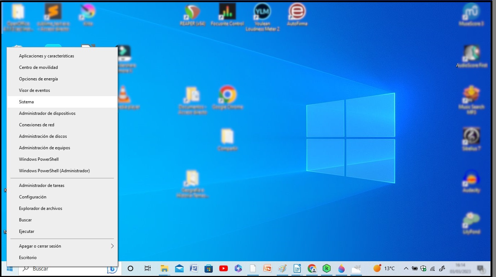

Como ya hemos comentado, los sistemas operativos se encargan de gestionar todo el trabajo de un equipo, para utilizar sus recursos de forma eficiente. Podríamos decir que son el intermediario entre el hardware y el usuario.
Un sistema operativo realiza las siguientes funciones:
- Gestiona las memorias: RAM, discos duros o tarjetas de memoria.
- Controla la carga del procesador.
- Asigna hilos de proceso para crear multitarea (apertura simultánea de varios programas).
- Instala, actualiza y desinstala (con la ayuda del usuario o automáticamente) programas y aplicaciones.
- Disponen de una interfaz gráfica (graphic shell) para que el usuario pueda interactuar cómodamente con los programas.
Los s.o. más comunes son: Microsoft Windows, Linux y Mac OS.
Microsoft Windows
Actualmente es el más utilizado en ordenadores de sobremesa, y portátiles.
En 1985 Microsoft publicó la primera versión de Windows (Windows 1.0), una interfaz gráfica sencilla y no muy potente. Después de esta, Microsoft ha ido desarrollando versiones cada vez mejores. . Las últimas son: Windows 10 y, posteriormente, Windows 11, lanzado en octubre de 2021.

Escritorio de Windows 10
Lo normal es que, al adquirir un ordenador, Windows venga preinstalado de fábrica, sin embargo, no siempre es así. Algunos ordenadores, especialmente los gaming, vienen sin Windows. Esto reduce su coste ya que no hay que pagar el extra por la licencia de Windows.
Aunque Windows no es gratuito, tiene la ventaja de que es posible actualizar a una versión más moderna sin coste alguno (si el hardware del ordenador lo permite).
Una forma de consultar la versión de Windows que tenemos instalada en nuestro ordenador es pulsando con el botón derecho sobre el botón de Inicio (o usando las teclas Windows+X) y a continuación Sistema.


Un aspecto importante que podemos consultar también accediendo al menú Sistema es si la arquitectura de nuestro equipo es de 32 o de 64 bits. Este dato es imprescindible conocerlo a la hora de descargarnos algún programa, ya que las aplicaciones suelen ofrecer versiones para cada tipo de arquitectura.
Las nomenclaturas de 32 y 64 bits se refieren a cómo se almacenan los datos. Los sistemas de 32 bits almacenan sus datos en bloques de 32 bits, mientras que los otros lo hacen con bloques de 64 bits, por lo que estos últimos pueden gestionar más memoria RAM que los primeros.
Linux
Este sistema operativo, basado en Unix, tiene un funcionamiento diferente a Windows. Mientras que en Windows cada aplicación ocupa su propia carpeta, en Linux los archivos se encuentran en carpetas diferentes: los programas ejecutables están en un lugar, los archivos de configuración relacionados con los ajustes del programa están en una carpeta diferente...
Linux es un sistema operativo de código abierto, lo que significa que puede ser modificado y distribuido por cualquier persona. Además, es gratuito y podemos elegir entre las diferentes versiones que existen.
En los ordenadores para el hogar, Linux, a pesar de ser gratuito, es muy poco usado, pero la mayoría de servidores, y empresas usan Linux porque es fácil de personalizar. Las versiones más populares son Ubuntu, Debian, Linux Mint y Fedora.
Mac OS
Es el sistema operativo creado por Apple y solo puede instalarse en ordenadores de la propia marca.
Mac OS es un sistema operativo de pago basado en sistemas tipo Unix (a igual que Linux), cuyo código fuente es cerrado, es decir, no está disponible para que cualquier persona lo pueda modificar.
Mac Os está diseñado para profesionales. Las versiones más recientes son: Ventura, Monterrey, BigSur y Catalina; y algunas, un poco más antiguas, son: Mojave, HighSierra, Sierra.